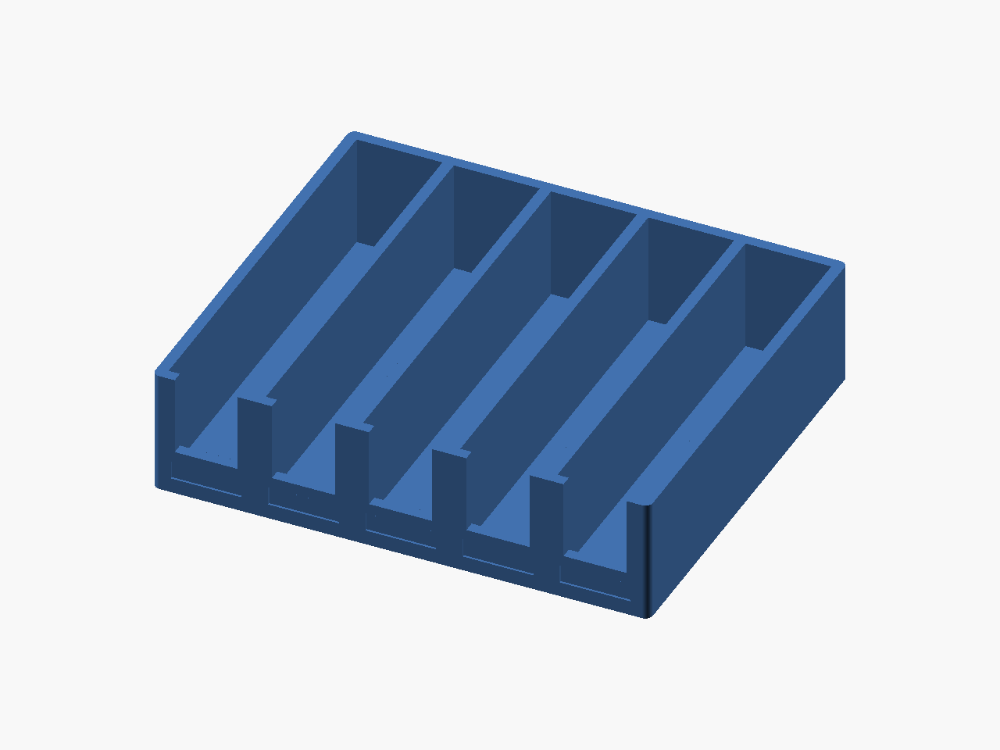
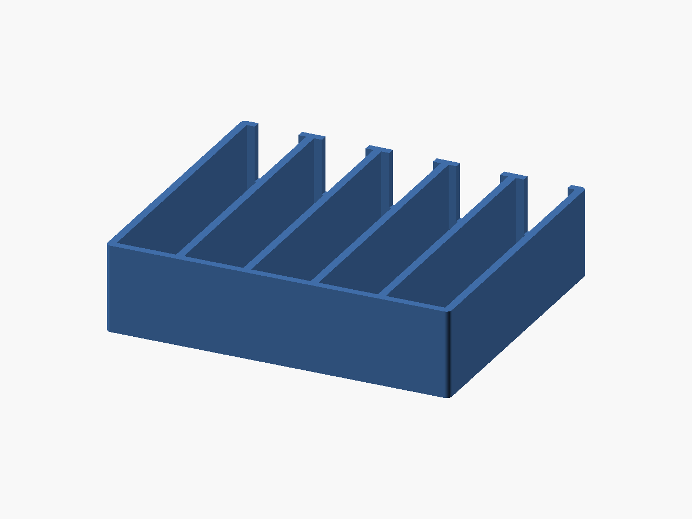

Desk staging / v1
Tapeyard
Five bays. A clearer bench.
An open staging rack for bare LTO cartridges, with a coupon and footprint gauge.


- Delivery
- Digital ZIP
- Included
- 3 STL files + source
- License
- CC-BY-4.0 models / MIT source
- Price
- TBD — sales not open
TODO: Etsy listing URL and price. This preview link does not open checkout. No purchase is available yet.
Digital files only. No printed parts, filament, tools or hardware are supplied. AI-assisted CAD scripting was used.
Start small. Check the fit.
Trial the bay coupon and footprint gauge using synthetic blocks. Cases are not supported. This open desk organizer provides no archival or environmental protection.
No physical print or fit test has been performed. Print settings are starting points.
01 / THE DESIGN
Useful details, open to adjustment.
Tapeyard keeps five bare LTO cartridges upright on a desk with their spines visible. Individual bays separate cartridges; low front lips and finger windows make removal easier. Shallow front recesses accept small paper labels, and four underside seats accept optional adhesive feet. No labels, feet, or cartridges are supplied.
The nominal cartridge target is 102 x 105.4 x 21.5 mm. Each bay is 22.7 mm wide and 106.6 mm deep, allowing 1.2 mm total clearance on both axes. The complete organizer is 131.5 x 112.6 x 33 mm. It holds bare cartridges, not protective cases. Put the 105.4 mm edge along the bay depth and keep the access door facing upward. Print the short single-bay coupon to check thickness; it does not test the full cartridge depth. The lightweight 21.5 x 105.4 x 4 mm footprint frame tests nominal width and depth without using actual media.
Print base down in PLA or PETG, 0.20 mm layers, 4 walls, 20% gyroid, 5 top/bottom layers, supports off. The underside foot seats require short bridges. Adjust slot count, cartridge dimensions, clearance, walls, floor, and divider height in OpenSCAD. This is an open desk staging rack; it does not replace protective cases or controlled archival storage.
02 / PRINT NOTES
A starting point for your printer.
- Material
- PLA or PETG
- Alternative
- Either for a cool desk
- Nozzle / layer
- 0.4 / 0.20 mm
- First layer
- 0.20 mm
- Walls
- 4
- Infill
- 20% gyroid
- Top / bottom layers
- 5 / 5
- Supports / brim
- Off / 0 mm
- PLA nozzle / bed
- 210 / 60 °C
- PETG nozzle / bed
- 240 / 80 °C
Orientation
Broad base on bed; bays open upward. Bridge the four shallow 8 mm foot seats.
Unverified starting points; use filament and printer guidance, tune coupons.
Preserve the shared library path when editing OpenSCAD. Adjust the fit parameter and re-export; do not scale the entire STL to fix a clearance.
Read the printing FAQ03 / DIMENSIONS
Measure before you make.
Nominal CAD bounds in millimetres. Physical print dimensions will vary.
| Export | Role | X × Y × Z (mm) |
|---|---|---|
tapeyard-five | part | 131.5 × 112.6 × 33 |
tapeyard-bay-coupon | coupon | 28.7 × 34 × 33 |
tapeyard-footprint-gauge | coupon | 21.5 × 105.4 × 4 |
04 / IN THE ZIP
The files travel together.
31 files · 175.2 KiB · release v1. STL variants, editable source and shared library, two-angle CAD renders, dimension guide, print settings, licenses, platform draft copy, validation snapshot and checksums.
See the exact package contents
- LICENSE
- README.txt
- SHA256SUMS
- VALIDATION.json
- catalog.json
- designs/lto-organizer/README.md
- designs/lto-organizer/dimensions.svg
- designs/lto-organizer/listings/makerworld.json
- designs/lto-organizer/listings/makerworld.md
- designs/lto-organizer/listings/printables.json
- designs/lto-organizer/listings/printables.md
- designs/lto-organizer/lto-organizer.scad
- designs/lto-organizer/print-settings.json
- designs/lto-organizer/renders/kit-front.png
- designs/lto-organizer/renders/kit-rear.png
- designs/lto-organizer/renders/tapeyard-bay-coupon-front.png
- designs/lto-organizer/renders/tapeyard-bay-coupon-rear.png
- designs/lto-organizer/renders/tapeyard-five-front.png
- designs/lto-organizer/renders/tapeyard-five-rear.png
- designs/lto-organizer/renders/tapeyard-footprint-gauge-front.png
- designs/lto-organizer/renders/tapeyard-footprint-gauge-rear.png
- designs/lto-organizer/stl/tapeyard-bay-coupon.stl
- designs/lto-organizer/stl/tapeyard-five.stl
- designs/lto-organizer/stl/tapeyard-footprint-gauge.stl
- docs/CC-BY-4.0.txt
- docs/LICENSING.md
- docs/PLATFORM-LIMITS.md
- docs/PRINT-ACCEPTANCE.md
- docs/SOURCES.md
- evidence/platform-limits.json
- lib/common.scad
Package: goblin-workbench-lto-organizer-v1.zip
SHA-256: c471aa6b4c00be2807c9a73c7d57431b2e0dc9aa5d46db1806e2a54c770989a3
05 / MAKE IT YOURS
Share it. Change it. Credit the workbench.
CC-BY-4.0 permits sharing and adaptation, including commercial use, with attribution, a license link and an indication of changes. Do not imply endorsement or add legal or technical restrictions that prevent the licensed uses. Editable source is MIT.
Read the license summary and full terms
Designed by Goblin Workbench — Tapeyard, v1. CC-BY-4.0. Changes: describe your modifications or state “unmodified.”